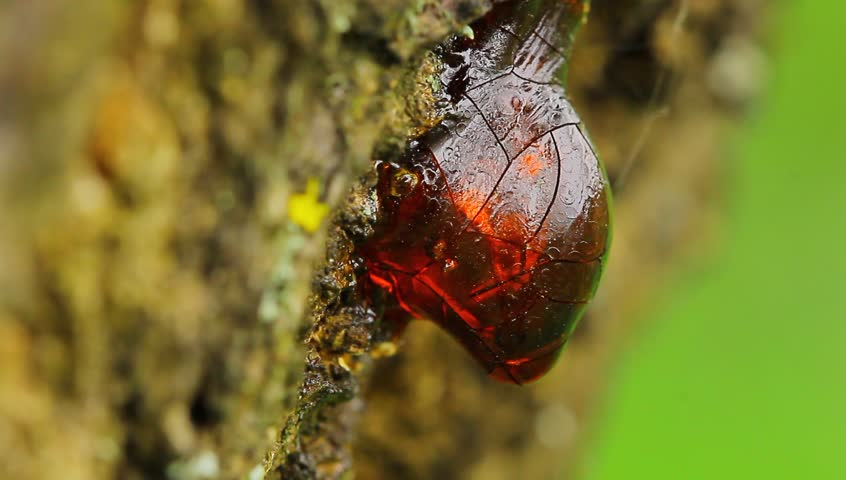
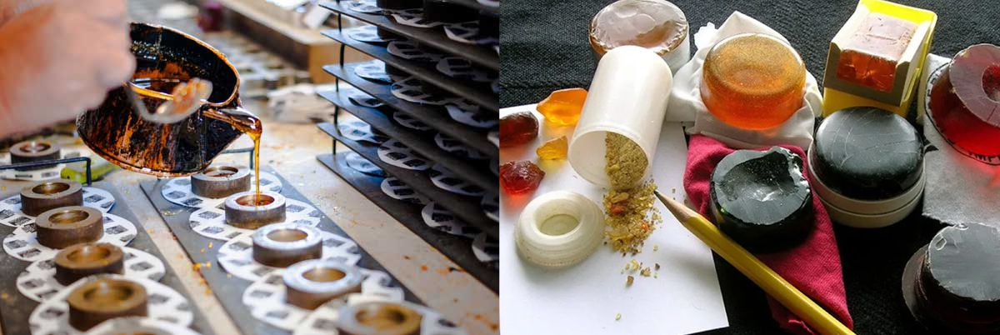

Our Rosins
For some information on rosin, and rosin sold in our store, please watch this video:
How are rosins made?
Rosin, also known as ‘colophony’ is made from the resin of pine and conifer trees. Resin is the coloured viscous substance that oozes out of the wood when a tree is cut and is usually collected through a process called ‘tapping’.

Once collected, the resin is then heated and purified, and then poured into moulds, and sometimes other ingredients are added such as beeswax, turpentine, or gold flakes. The cooking process and any added ingredients are factors that change the playing qualities and colour of the final product. Each manufacturer has their own specific procedure and recipe for rosin which is usually kept as a safe guarded secret.

The Gustave Bernadel Original Rosin:
The Gustave Bernadel Colophane Rosin: